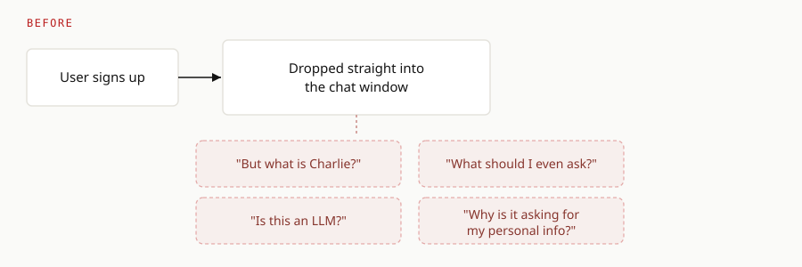
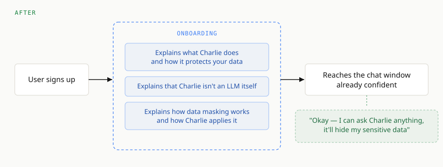
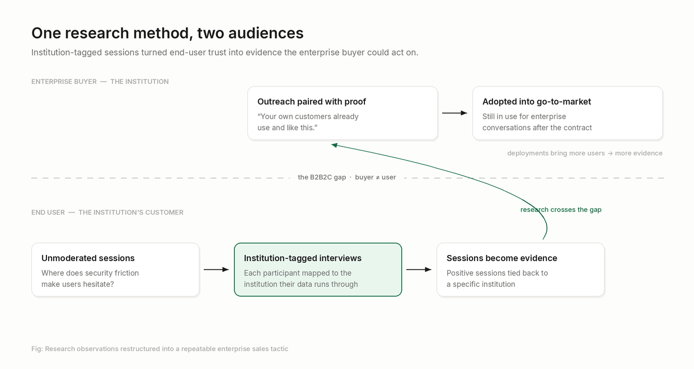
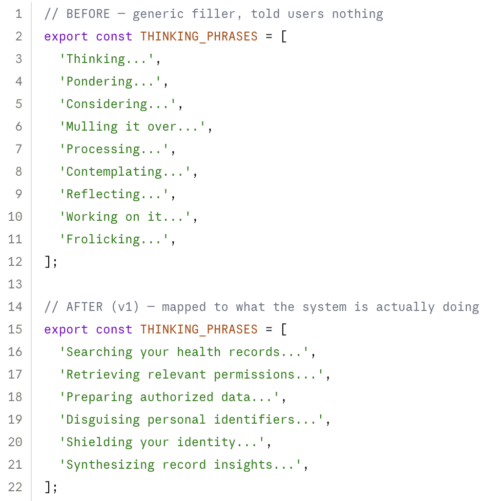
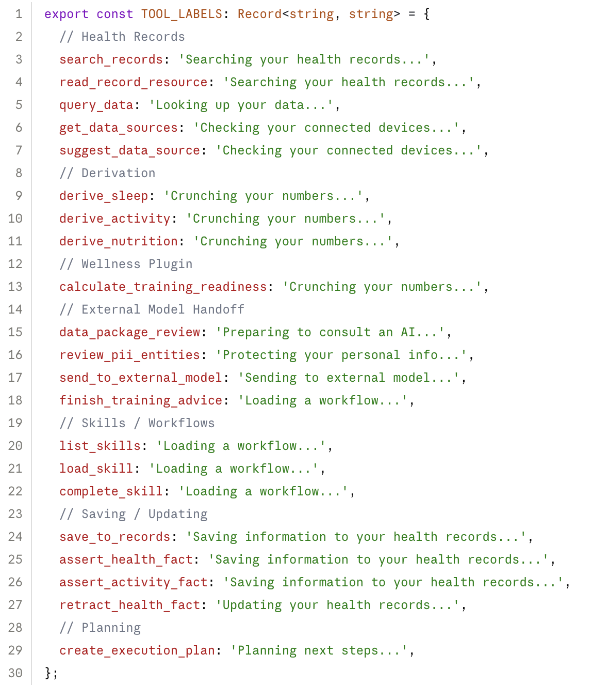
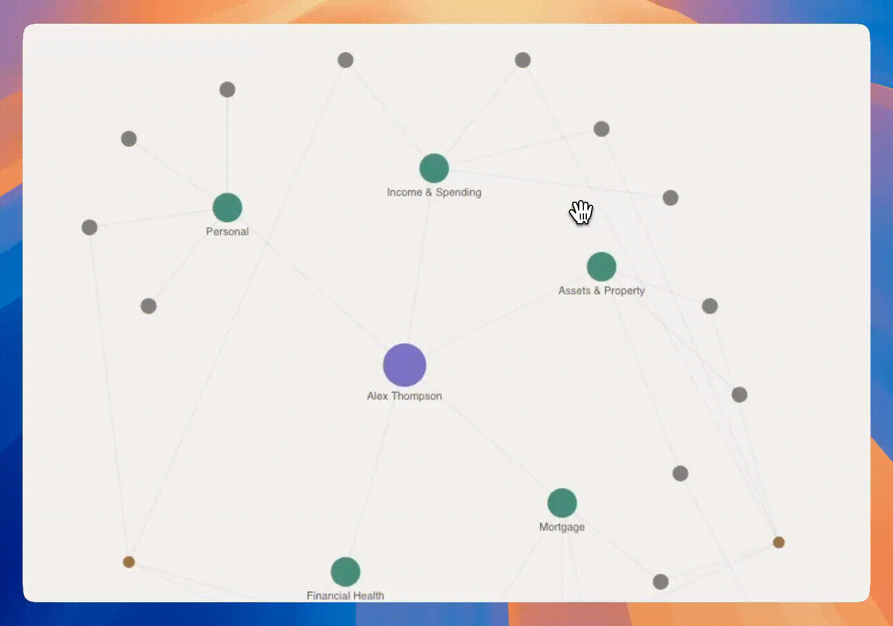
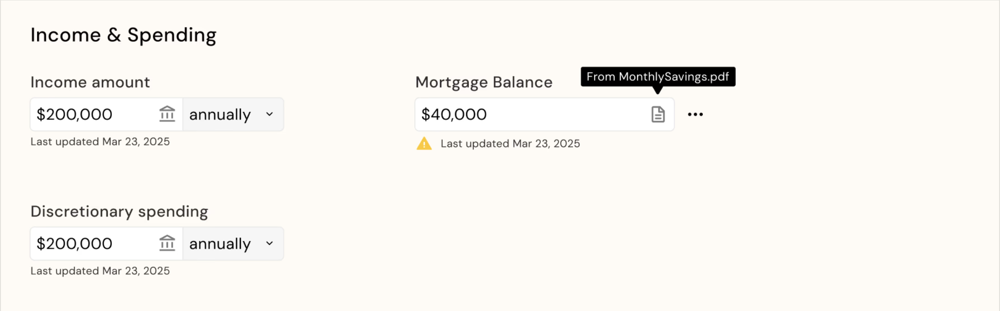
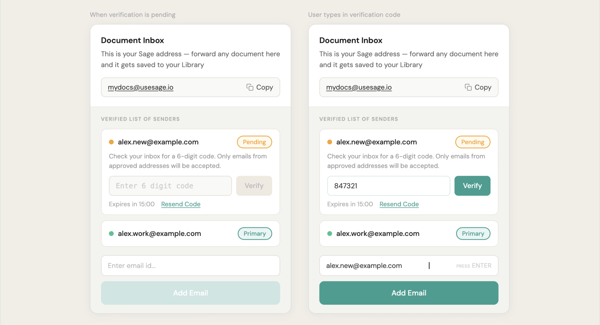
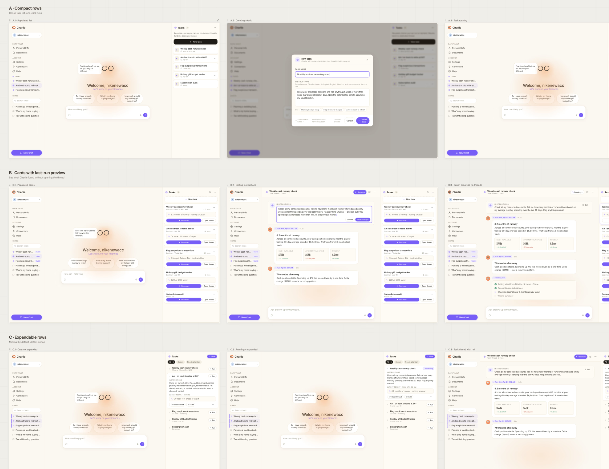
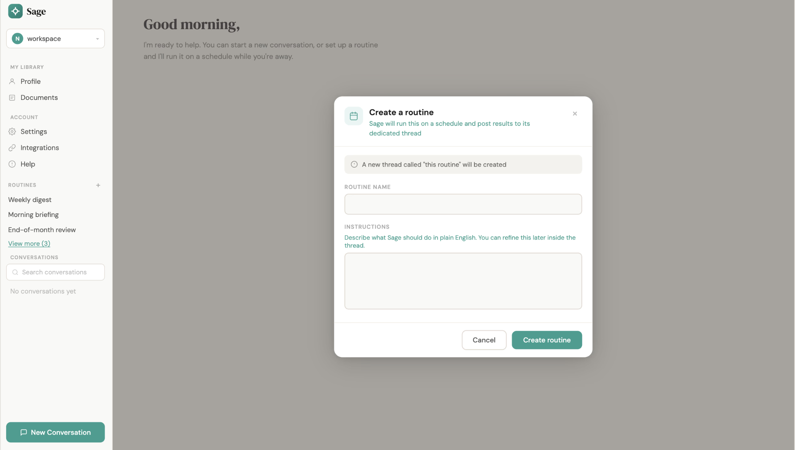

Charlie — Privacy-first AI assistant
Redesigning a financial AI users didn’t trust yet
In early research, only 1–2 of every 10 users continued after starting a chat and reaching the bank-connection flow. Over 2–3 weeks, I studied the problem with 20 users, redesigned Charlie’s trust checkpoints, and shipped changes that reduced privacy questions while improving confidence and comprehension.
RoleDesign Engineer
Timeline2026
ImplementationResearch, interaction design, AI-assisted functional prototypes, and shipped frontend work
What
I joined a product whose privacy architecture was stronger than its explanation. New users landed directly in chat without knowing Charlie was a protective layer — not the model itself. They were then pushed toward connecting a bank account before the product had explained what it would access, what would leave, or whether connection was optional.
How
Across 2 research rounds over 2–3 weeks, I studied 20 users aged 25–60, translated the findings into trust checkpoints, and moved from feature brief to functional prototype in 1–2 days.
Impact
Users asked fewer privacy questions and showed stronger confidence and comprehension; the research also shaped the company's enterprise go-to-market strategy.
NDA Alert — mockups in this case study are illustrative, reimagined to protect sensitive product details while preserving the design approach, decisions, and outcomes that shaped the work.
01Context
The privacy architecture worked. The experience didn’t explain it.
Charlie masked identity before requests reached the model, but users landed in chat without knowing that — or why the product needed their financial data.
Charlie is an AI-powered personal assistant that masks identifying data before a query leaves the product, so the model gets useful context without knowing who the user is. The first wedge was personal finance, where trust breaks quickly if security feels confusing or heavy.
I led user research, feature design, and rapid AI-assisted prototyping across onboarding, data masking, source ingestion, and recurring assistant tasks.

Fig: The gap between buyer requirements and end-user trust
02Problem
Trust broke before the first question
The product asked for sensitive context and a bank connection before users understood the privacy model or saw a meaningful choice.
The experience asked for trust in the wrong order. Users were expected to share sensitive financial context before Charlie had explained what it was, how its privacy layer worked, or what control they retained.
I needed to make the infrastructure legible without making the product feel like surveillance — preserving clarity, control, and momentum in the same flow.

Fig: Onboarding flow
Decision: explain before you ask
Early builds dropped users straight into chat with no explanation of what Charlie was — not the model itself, but a privacy layer in front of one. I pushed to front-load that explanation. In interviews, users who saw it upfront understood the mechanism before their first query, and were already positive about Charlie by the time they reached the chat.


Fig: 4 recurring questions the new onboarding needed to answer before first contact

Fig: Masking a query before it leaves the product
Decision: choice over coercion
Early versions pushed users to connect a bank account the moment they landed. I pushed back — some users weren't comfortable linking an account, dummy or real, and preferred typing raw numbers. We replaced the push with a real choice: "You can connect bank accounts or give me raw numbers, whichever you're comfortable with."
Across 20 users over 2–3 weeks, the redesigned experience produced fewer privacy questions and stronger confidence and comprehension. Trust was built through the product experience itself, not disclaimers or consent screens.
03Discovery
No research brief, so I built the evidence loop
Across 2 research rounds with 20 users aged 25–60, I identified the trust gap behind abandonment and translated it into roadmap and go-to-market questions.
Over 2–3 weeks, I ran 2 rounds of usability research with 20 users and identified a critical trust gap that was driving abandonment. I advocated for human-in-the-loop checkpoints and formal usability testing. The work quickly moved beyond screens into product strategy: who is this actually for, and what does each audience need to trust?

Fig: Observations turned into strategic product questions
In a B2B2C model, the enterprise buyer and the end user are different people. I translated session observations into four strategy questions that leadership could use to shape the roadmap.
The team's early focus was B2B sales — reasonable, but it risked treating end-user trust as secondary.

I flagged that if the product didn't hold up for real users, it would eventually undermine the enterprise pitch itself. The team agreed, and I took the initiative to lead the UX work directly.
04Data Package Review
“Why does Charlie have this — and why is it leaving?”
Four unmoderated sessions exposed the failure of a raw-data review screen. I rebuilt it around the context users actually needed.
I ran 4 unmoderated evaluation sessions across mobile and desktop, focused on the Data Package Review component: the moment where users decide what context to share before a query goes out.
Across the broader onboarding and chat journey, only 1–2 of every 10 participants continued after starting a chat and reaching bank connection. The review screen showed why: it surfaced every raw field being pulled — full transaction logs, unfiltered. Users asked the exact question you don't want at a trust checkpoint: "why does Charlie have this, and why is it about to leave?" I rebuilt the review UI around what needed to be shown, not everything that could be.

Fig: Brief insights from testing
05Agent UX
Replacing “Thinking…” with the truth
I mapped interface language to backend events so users could see the actual operation underway.
One of the first things I noticed after joining was the assistant's loading state: it cycled through generic filler — "Thinking...", "Pondering...", "Frolicking..." — copy that didn't match a security-first product handling sensitive data. I rewrote and shipped event-based phrases mapped to the actual backend action underway: a data lookup, a permissions check, a model handoff, each with its own phrase. Now, when the agent is working through something, users know exactly what it's doing, because the UI is telling the truth.

Fig: Generic filler replaced with phrases tied to what the agent is actually doing (illustrative reconstruction)

Fig: Every backend event mapped to its own phrase, so the copy tracks what's actually happening (illustrative reconstruction)
Takeaway — for an agent, thinking phrases aren't decoration, they're a live status readout. Static UX is designed around states; agent UX has to be designed around events. The backend is design material.
06Design & Architecture
Four shipped systems that made privacy feel invisible
Each started from a trust problem and shipped as part of the product — none were speculative concepts.
I moved from feature brief to functional prototype in 1–2 days, then carried 4 modular systems into the shipped product. Each made privacy operate as invisible infrastructure:
Shipped1. Visualizing the knowledge graph: The shipped experience personalized recommendations across 6 connected financial data sources, giving users one place to understand, manage, and audit the information shaping Charlie’s answers.

Fig: Interactive knowledge graph - Illustrative only; original data and structure withheld under NDA

Fig: Source attribution shown in the user's profile
Takeaway — testing showed provenance mattered more to users than the masking itself — knowing where a number came from built more trust than hiding it did. Field-level source attribution across 15 shipped profile fields gave users a way to verify each number, reducing errors and confusion during testing.
Shipped2. Frictionless ingestion via email sync: A secure email-forwarding verification pipeline — frictionless enough that connecting a new source feels like a natural step, not a security checkpoint.

Fig: A way to connect through emails seamlessly
Shipped3. Local-first voice architecture: I designed and shipped the full feature, protecting sensitive user input while preserving the speed and naturalness of voice interaction for users increasingly comfortable speaking to an assistant over typing.

Fig: Exploring task execution UI with Claude Design
Shipped4. Autonomous task execution: A structured task-scheduling modal that lets users set up persistent financial check-ins in plain English — no configuration overhead. I owned 4 of 9 implementation tickets and shipped my frontend scope in 3 days against a 2-week estimate set by the PM and CPO.

Fig: Tasks to run on recurrence
07Impact
From user trust to product strategy
The work strengthened user confidence, shipped at production scale, and influenced the roadmap and enterprise story.
Across 20 users over 2–3 weeks, the redesigned experience produced fewer privacy questions and stronger confidence and comprehension. The shipped product supported 6 connected financial data sources and field-level provenance across 15 profile fields.
I also delivered 4 of the feature's 9 autonomous-task tickets in 3 days against a 2-week estimate. The research framework went on to shape formal testing, the product roadmap, and enterprise conversations.